Projects
Black flowers
I painted this during a manic episode, the swirls represent racing thoughts. Using only one color, and the end of a paintbrush I carved the swirls around the freshly painted flower pedals.
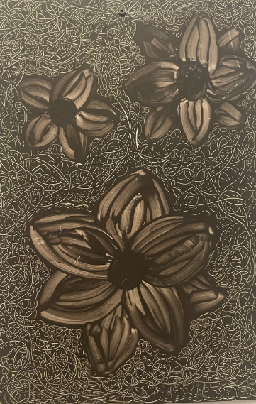
Mental Health Matters
I did this piece of art for a contest and won $200, these colors are based on an actual brainscan of someone with Bipolar Disorder.
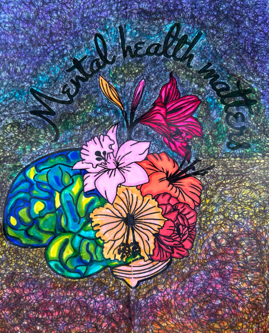
Pieces project
This is another project I have done for a contest. This was done twice, I took the original and colored it to my desire and cut it into pieces. Then I glued the original onto the final copy, with coloring the cracks.

Ceiling Decoration
This is actually a project I did for my own livingroom. I took a 7ft by 7ft mesh sheet and created a huge spiderweb on my ceiling, we added a few bats. We will trade the bats with turkeys for November and snowflakes for December.
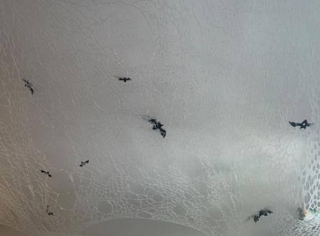
Light spelling Corona
This is a design I created of my last name out of LED strips to provide my daughter a night light.
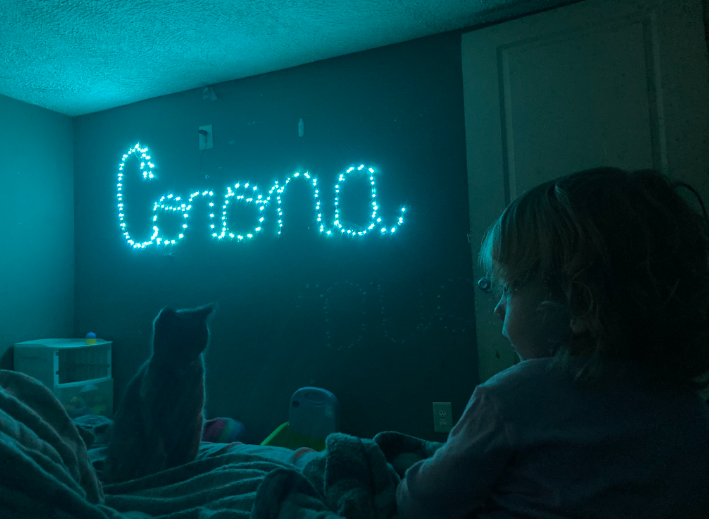
Flowers under a baby blue sky.
In this painting I actually started with an idea of something else, and let the flow of my mistakes create something else beautiful.
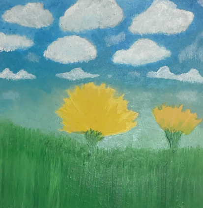
Egg
This is a painting of what I imagine an human egg to look like during ovulation.
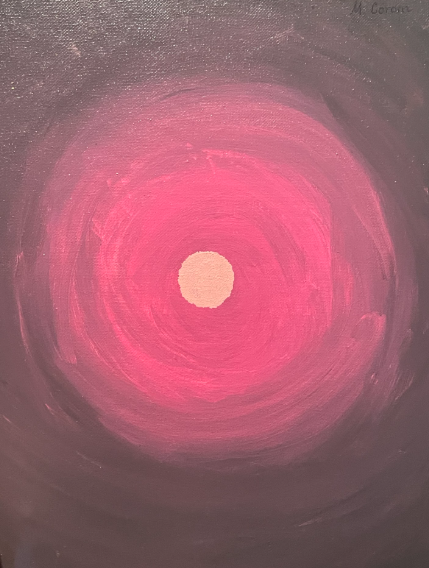
American flag
This painting I did with my daughter, it is of an American flag with my daughter's feet print in a way that is walking accross the flag.
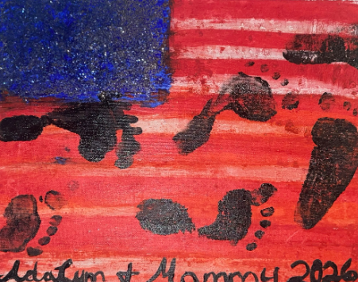
Love you more
This is a simple painting I did in a moment where I needed encouragement and craved creativity and texture.I used hot glue to write the words "Love you more" on the canvas.
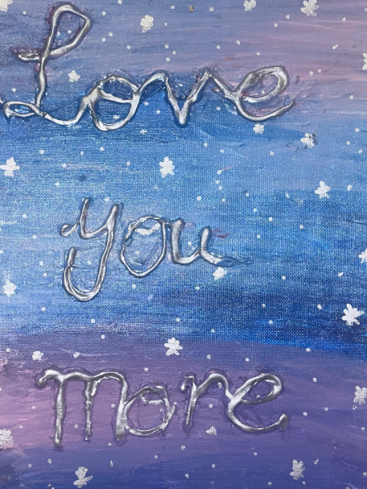
Mac Galaxy
This painting is something I did with my daughter. We started with a canvas backwards, poured glue then dry macaroni pasta. Once the first step dried we applied another layer of glue with different colored glitter, ending with a top coat of a clear finish.
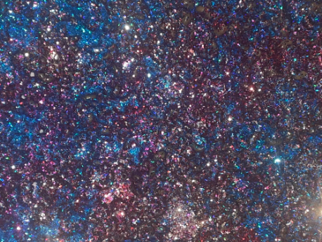
Moon
This is a painting of the moon. There are a rainbow of colors under the black cloud like figures. This painting has been repainted to be darker, where the light of each color fights to be seen.
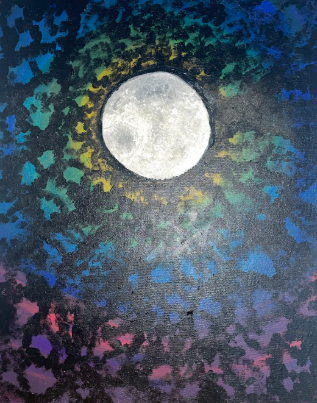
Ocean Seaweed
I did this painting in a moment of depression, I plan to recreate a seaweed to include some type of hidden image or figure within the seaweed.
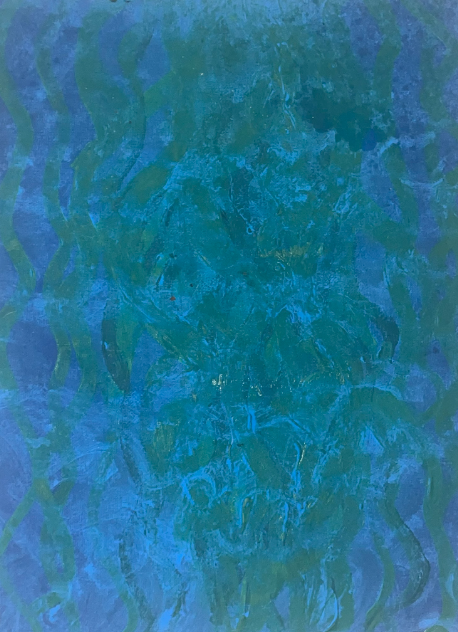
Sunflower
This is something I did with paint pens while working from home. Each detail was done in between a customer service call as a way to manage stress. The butterflies symbolizing freedom. The sunflower representing change.
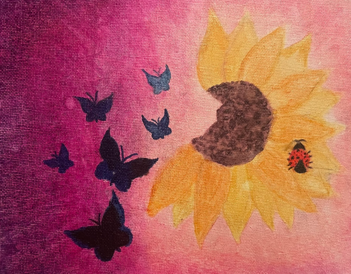
Tree
This painting is a poor version of the landscape in our wedding photos. I have a dream of the scene painted on my wall. I didnt have enough materials or hands on experience with a tree so I did a smaller version. This painting taught me many things and I enjoy looking at it knowing how much work is ahead of me.
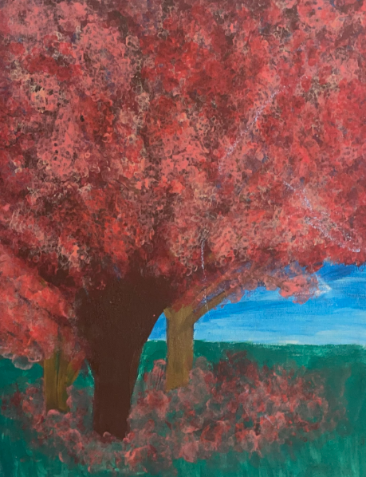
My dream wallart.
This is my dream, maybe not within this house but my owned home will have this painted somewhere.
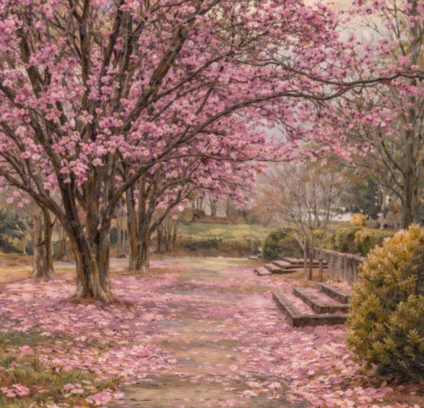